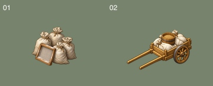

Wave37 네 장 교정 · 미설치 후보
보고서
proofs/01-confusion-pairs.jpg

blind/recognition.jpg
assets/condition_prosperous_bench.png
assets/trade_carpenter_a.png
assets/trade_miller_a.png
assets/trade_miller_b.png
 proofs/01-confusion-pairs.jpg
proofs/01-confusion-pairs.jpg assets/condition_prosperous_bench.png
assets/condition_prosperous_bench.png assets/trade_carpenter_a.png
assets/trade_carpenter_a.png assets/trade_miller_a.png
assets/trade_miller_a.png assets/trade_miller_b.png
assets/trade_miller_b.png